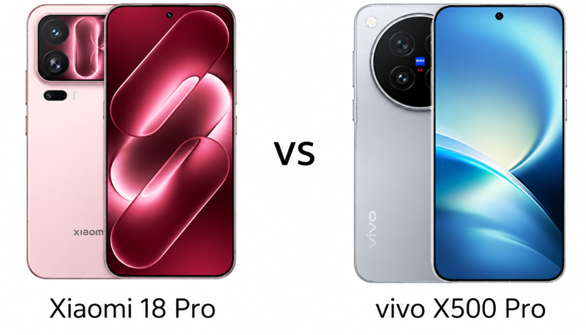
THE TECH EDIT
기술의 변화, 매일 한눈에.
카메라 · 스마트폰 · AI, 해외 테크 소식을 모아 전합니다.
최근 발행2026-10-20
새로 들어온 소식
LATEST STORIES최신 뉴스
전체 3,841개 기사
Xiaomi 루웨이빙: Redmi K100 스마트폰, 6.83인치 165Hz 고주사율 게이밍 스크린 탑재, 40개 이상 게임 165fps 기본 지원
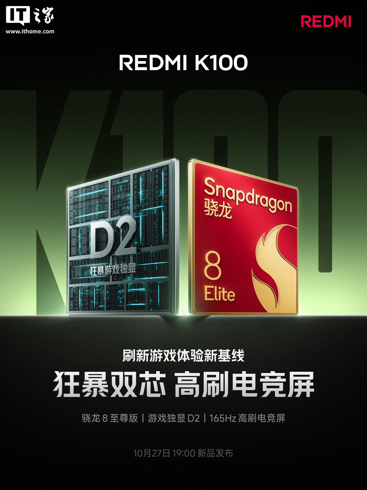
표준형 최초 게임용 외장 그래픽 D2 탑재: Xiaomi Redmi K100 스마트폰 성능 사양 공개, 165Hz 고주사율 게이밍 스크린도 제공
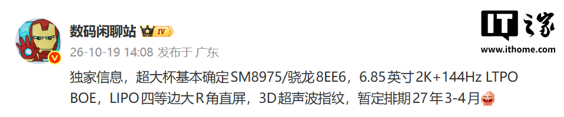
vivo X500 Ultra, 스냅드래곤 8EE6 칩셋 탑재, 내년 3~4월 출시 예정
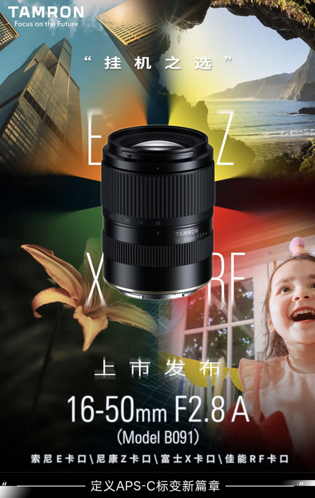
탐론 16-50mm F2.8 A 카메라 렌즈 출시: Sony E 마운트/Canon RF 마운트 버전 2,749위안부터 제공
SK하이닉스, 여러 은행과 손잡고 2조 원 출자해 한국 반도체 산업 지원
Samsung Galaxy S27 시리즈, 1~2월 출시 주기 복귀 전망… Pro/Ultra 모델 LPDDR6 및 UFS 5로 업그레이드 기대
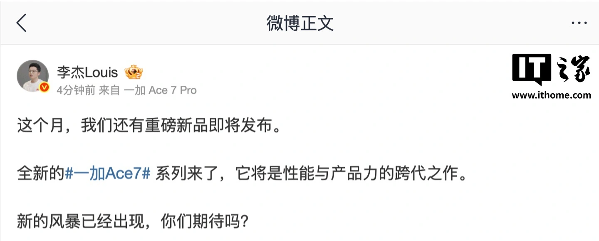
OnePlus Ace 7 시리즈 스마트폰, 이달 출시 공식 발표… "성능과 제품력의 세대 초월작" 표방

OnePlus 16 스마트폰, 첫 판매 기간 동안 OnePlus 15 대비 약 125% 판매량 기록
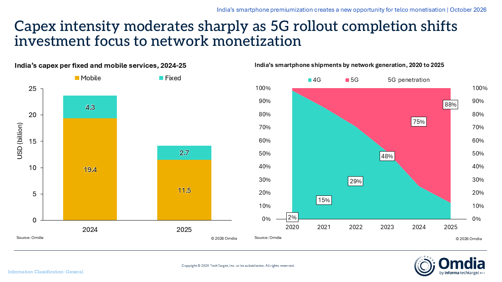
Omdia: 인도 스마트폰 고급화, 통신사 수익 창출에 새로운 기회 제공
IT 모닝 브리핑 1019: DeepSeek API 웹 검색 크롤링 출시; Apple iPhone Duo, 첫날 현장 판매 없음; Anthropic, 2030년 AI가 미국 GDP 50% 증가시킬 것...
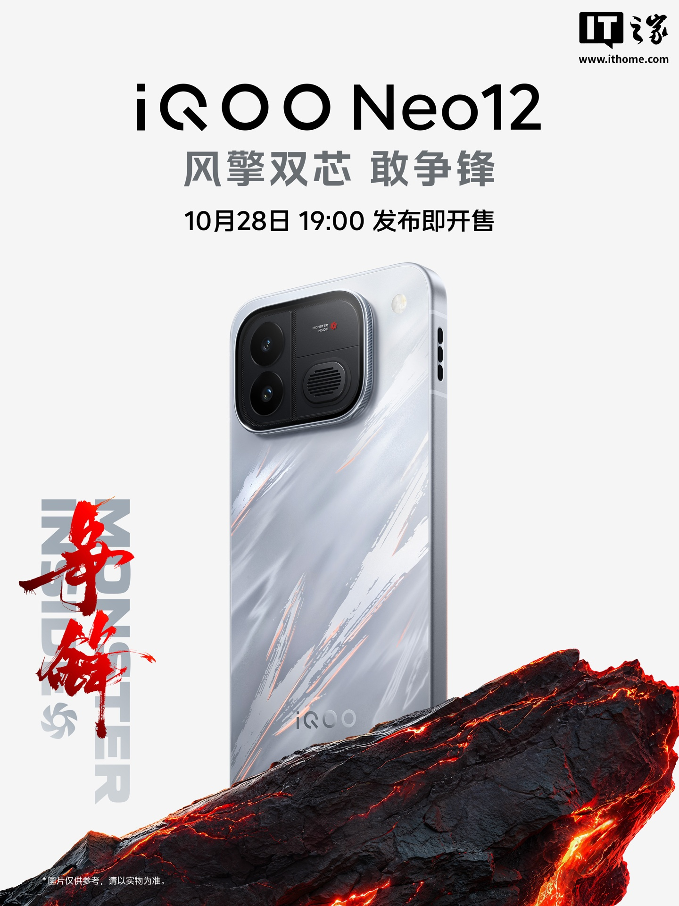
iQOO Neo12 스마트폰, 10월 28일 19시 출시 및 판매 개시 공식 발표, 외관 공개
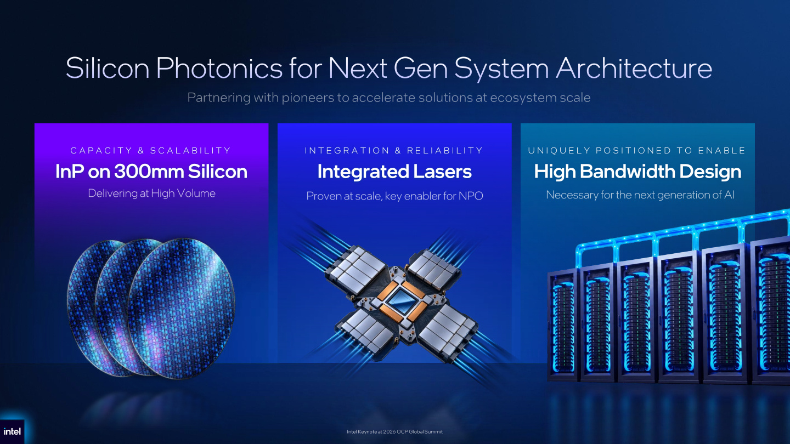
Intel, 실리콘 포토닉스 시대의 강점 설명: 유일한 12인치 InP 실리콘 포토닉스 대량 생산 웨이퍼 팹
2026년 3분기 인도 스마트폰 시장 침체, iPhone 판매량 20% 감소
Huawei Pura X View 바 타입 스마트폰, 10월 20일 10시 8분부터 60일간 사전 예약 시작
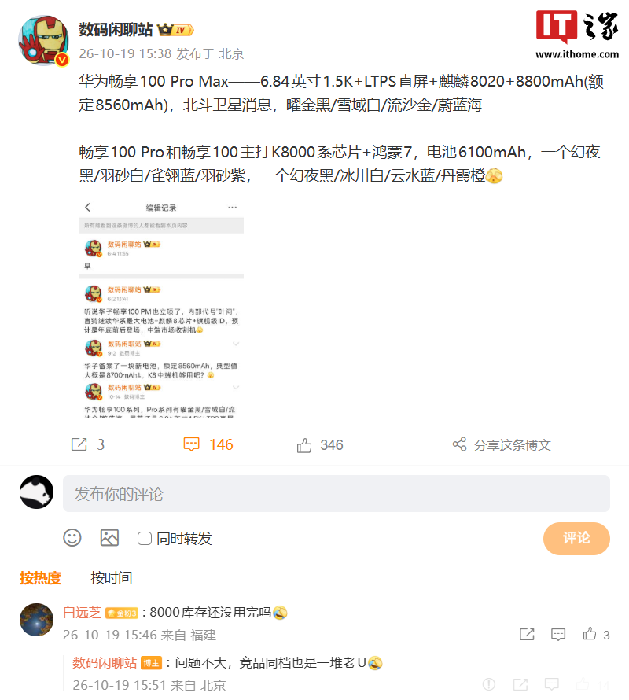
Huawei Enjoy 100 Pro Max 스마트폰, Kirin 8020 프로세서 탑재 및 베이더우 위성 메시지 지원 예정
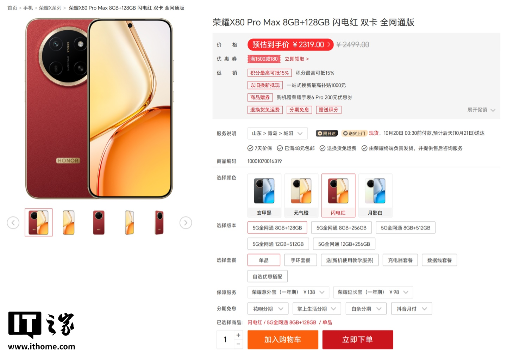
1,999위안 → 2,499위안, Honor X80 Pro Max 스마트폰 공식 홈페이지 가격 인상
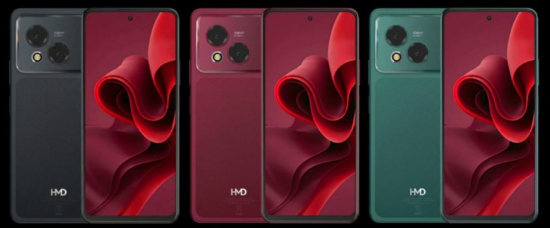
HMD 바이브 2 맥스, 1억 800만 화소 카메라, 유니SOC T9100 칩, 6,000mAh 배터리 탑재 유출

HMD Vibe 2 Max 스마트폰 사양 유출: 6.78인치 FHD+ LCD 패널, Unisoc T9100 프로세서
Samsung, Exynos 1330 프로세서 및 6.7인치 90Hz AMOLED 스크린 탑재 Galaxy F70 5G 스마트폰 출시

드론의 비평화적 목적 오용에 단호히 반대, 상무부 관련 수출 통제 조치 조정에 응답
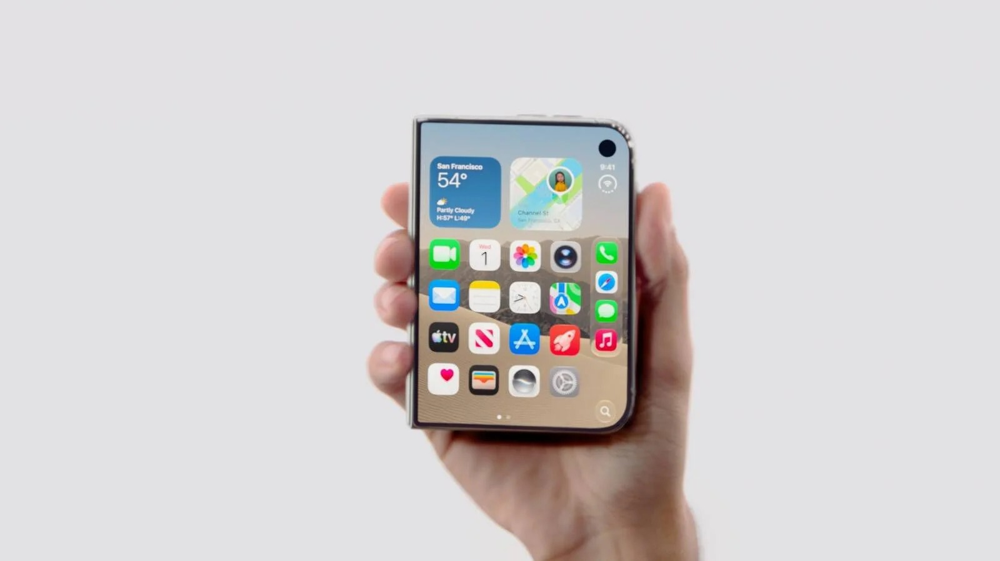
Apple, iPhone Duo EU 에너지 효율 라벨 공개: 총 배터리 용량 4883mAh
검색 결과가 없습니다
다른 검색어를 입력하거나 필터를 초기화해 보세요.